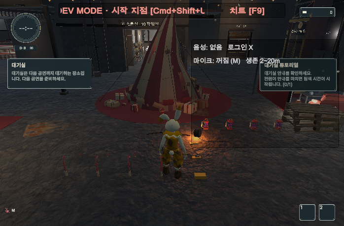

대기실 2차 기획서
진입·퇴장 조건, 쉬는 시간 타이머, 상점·선반·스케줄표, 밤 정비와 취침 규칙
문서 보기 →CO-OP COMEDY HORROR · UNITY 6
강제로 서커스 무대에 선 단원들이 목숨을 건 공연을 버티며, 공연 사이 대기실을 뒤져 탈출로를 여는 2~4인 협동 게임.

PROJECT OVERVIEW
플레이어는 하루 두 번 서커스 공연을 치러 공동 자금을 벌고, 공연 사이 대기실에서 정비하고 탐색합니다. 4일차 아침의 탐색 제한 시간이 끝나기 전에 탈출로를 열어야 합니다. 대기실은 쉬는 곳이면서 이전 세대 단원의 흔적을 따라 탈출을 준비하는 곳이고, 저는 이 공간과 그 안의 학습·탐색 흐름을 맡았습니다.
M3 최종 기준 1일차 흐름입니다. 2·3일차도 공연과 탐색을 반복하고, 탈출 조건을 채우면 언제든 탈출로로 향할 수 있습니다.
1·2차 기획서, 공간 구조 A·B·C, M3 변경안과 신규 지역 8곳을 기획하고 Unity에서 제작했습니다.
EXPLORATION탐색 오브젝트, 통로 기믹, 단서·기록 기물을 배치하고 최종 탈출 동선을 만들었습니다.
ONBOARDING공연 리허설 시스템과 대기실 안내 24개, 장소별 학습 이벤트를 기획·구현했습니다.
ASSETS · ART에셋 검수 기준과 톤앤매너를 정하고 대기실 재질·조명·기물에 적용했습니다.


DEVELOPMENT PROCESS
대기실은 M1에서 정비 공간으로 시작해, M2에서 열쇠·암호를 찾는 탐색 공간이 됐고, M3에서 맨몸과 도구로 길을 여는 구조로 바뀌었습니다. 매 단계 플레이테스트 결과와 팀 결정을 기획서에 반영하고, Jira 이슈와 작업 기록으로 변경을 남겼습니다.
DESIGN DECISIONS
같은 문제를 마일스톤마다 어떻게 바꿨는지 정리했습니다. 오른쪽 열이 M3 최종 상태입니다.
| 항목 | 이전 (M1·M2) | 변경 계기 | M3 최종 |
|---|---|---|---|
| 첫 플레이 학습 | M1: 서명 직후 바로 외줄 공연 | M1 피드백에서 공연과 규칙이 어렵다는 의견이 공통으로 나왔고, 대포 공연 성공 0/2 | 연습실 리허설 5구간 → 첫 공연. 추락 무패널티, 과반 동의로 구간 넘기기 |
| 백스테이지 | M1: 대기실과 분리된 탐색 구역 | M2 방향성 회의에서 공간과 흐름이 하나로 이어져야 한다고 결정 | 백스테이지 제거, 탐색 요소를 대기실 안으로 통합 |
| 대기실 구조 | M2: 구조 A·B·C를 런마다 바꾸는 계획 | 구현 단계에서 구조 A만 제작하고, 런마다 섞는 배치는 만들지 않음 | 구조 A 고정. 방 24곳 프리팹화, 신규 지역 8곳 추가 |
| 길을 여는 방법 | M2: 열쇠 6종 · 비밀번호 패드 · 2인 동시 상호작용 | 통로 기믹 원칙(11/09): 맨몸으로도 열 수 있고 도구가 있으면 더 빠르게, 새 애니메이션 없이 기존 동작 재사용 | 맨몸·천막 말뚝 뽑개로 부수기, 휴대 절단기로 배선 끊기, 배터리로 전력, 2인 목마로 오르기 |
| 부수기 조작 | 천막 말뚝 뽑개 6번 연타 | 플레이 피드백(11/13)으로 꾹 누르기 방식 도입 후 게이지 하나로 통합 | F를 누르는 동안 게이지. 맨몸 1회 = 1.5초, 뽑개는 5배 빠름. 손을 떼도 진행 유지 |
| 안내 노출 | M2: 첫날 안내를 순서대로 일괄 표시 | 플레이 피드백(11/15·11/17)으로 안내 시작 시점 조정 | 해금된 장소만 안내, 문 열림 연출이 끝난 뒤 시작. 장소별 학습 이벤트 추가 |
| 상호작용 거리 | 공통 2.5m | 대기실 기물 거리를 절반으로 줄였다가(#384) 높은 단서에 닿지 않는 문제 발견(#385) | 대기실 기물만 수평 1.25m, 높이 포함 거리는 2.5m 유지 |
| 상자 보상 | 꽝 포함 | 탐색 학습용 기물은 꽝 없이 배치한다는 계획(Task-126) | 꽝 없음. 머리핀 20% · 토큰 50원 35% · 20원 30% · 100원 15% |
| 연습실 | M2: 리허설 이수 뒤 재연습 | 연습실을 자유 연습 공간으로 전환 | 재연습 삭제, 판정 없는 자유 연습 코스. 관객석 658개 삭제, 링 반지름 20 → 26.5m |
WAITING ROOM
폐공장을 급조해 만든 서커스 단원 대기실입니다. 로비에서 공연장까지는 한 줄로 명확하게, 탐색 동선은 가지를 뻗도록 구성했습니다. 아래는 M3 최종 구조입니다.
숏컷은 한 번 열면 계속 열려 있고, 탐색 진행은 세대가 바뀌면 초기화됩니다.
EXPLORATION
M2에서는 열쇠와 비밀번호를 모아 탈출로를 여는 구조로 탐색 오브젝트 44개와 도구 5종을 구현했습니다. M3에서는 열쇠 동선을 걷어 내고, 이미 있는 F 상호작용·말뚝 뽑개 타격·운반·목마·트램펄린 동작을 재사용하는 통로 기믹으로 다시 짰습니다.
| 기믹 | 여는 방법 (맨몸 / 뽑개) |
|---|---|
| 녹슨 벽 | 숨겨진 방 맨몸 6 / 뽑개 1 · 화장실·기계실 벽 맨몸 15 / 뽑개 6 |
| 빗장 문 | 계단 빗장 3 / 1, 화물 철문 빗장 6 / 1. 한쪽에서만 열림 |
| 전기 문 | 배터리를 꽂으면 열림, 빼면 닫힘. 회로를 부수면 열린 채 고정 |
| 배선 절단 | 휴대 절단기로 톱날을 쏴 배선을 끊음. 모두 끊으면 정전 연출 |
| 수직 이동 | 2.3m 환풍구는 2인 목마 전제, 높은 곳은 목마·트램펄린 |
| 숏컷 | 창고 창문에서 보관실로 내려가는 한 방향 길 |
맨몸 숫자 1 = 1.5초 (맨몸 6 = 9초, 맨몸 15 = 22.5초).
REHEARSAL & TUTORIAL
공연 조작은 ‘리허설’, 대기실 기능은 ‘튜토리얼’로 나눴습니다. 기준은 진행자 설명 없이 다음 행동과 목적지를 스스로 찾는지입니다. 탐색 퍼즐은 단서·도구의 쓰임까지만 알리고 해법은 알려 주지 않습니다.
실제 공연 코스·HUD·조작을 그대로 쓰고, 추락해도 부상 없이 1.5초 뒤 구간 출발점에서 다시 시작합니다. 과반이 동의하면 구간을 넘깁니다(4명 3표, 3명·2명 2표).
| 구간 | 배우는 것 | 완료 |
|---|---|---|
| 1 · 외줄 건너기 | 균형 잡기, 전진·후진, 끊긴 줄에서 옆줄로 점프 | 전원 도착 또는 1명 도착 후 과반 동의 |
| 2 · 그네타고 건너기 | 그네 잡기, 반동, 점프로 건너편 줄에 착지 | 같음 |
| 3 · 연속 그네 | 체공 중 다음 그네 잡기 | 같음 |
| 4 · 트리거 그네 | 그네를 잡고 있는 동안 끊긴 줄이 이어짐 | 1명 도착 즉시 |
| 5 · 목마와 높은 그네 | 동료와 목마로 높은 그네에 매달리기 | 전원 도착 또는 과반 동의 |
M2에는 3단계(외줄 · 인간 그네 · 종합)로 기획했고, M3에서 5구간으로 나누고 길안내를 강한 단색 펄스로 바꿨습니다. 인간대포 리허설은 대포를 해금하면 호스트에게 이동 여부를 묻습니다.
ITERATION
M3 기간(11/09~11/20) 대기실 버그 수정·고도화를 날짜순으로 기록했습니다. 플레이로 확인하지 않은 항목은 “플레이 미확인”으로 따로 표시해 관리했습니다.
| 문제 | 원인 | 조치 |
|---|---|---|
| 대기실이 무거움 | 매 프레임 씬 전체 검색, 트리거 쌍, OnGUI 사용 | 구조 정리 후 프로파일러로 Update 29.1 → 7.8ms, LateUpdate 19.4 → 7.3ms |
| 벽·바닥 깜빡임 | 방 맞바꿈 이전에 구운 오클루전 데이터, 같은 자리에 겹친 면 62쌍 | 보이는 면 겹침 수정 후 오클루전 재굽기. 배관 구역 겹침 26.6m² → 0 |
| 톱날이 쏘자마자 사라짐 | 판정 반지름이 탈출로 씬 값(1.1m)이라 발사 순간 주변에 닿음 | 대기실은 0.35m로 분리, 막힌 발사구는 당겨서 발사 |
| “바닥에 더 놓을 수 없습니다” | 바닥 기물 한도 32개인데 발견품 자리가 47곳 | 한도 96개로 조정 |
| 높은 단서에 점프해야 닿음 | 상호작용 거리 절반 규칙이 높이에도 적용 | 수평 거리만 줄이고 3차원 거리는 유지, 대상 94개 전수 확인 |
| 잠긴 문 너머가 비침 | 문틀 4곳에 카메라용 벽 표시와 충돌체가 없음 | 문틀에 표시·충돌체 추가, 문틀 안에 설 수 있던 자리 18 → 0 (플레이 확인 완료) |
| 추격자가 선반 위로 못 오름 | 끊김 없는 수직 벽만 오르기 대상으로 인정 | 2.2m 안쪽 간격으로 잡을 곳이 있으면 오르게 함. 오를 수 있는 곳 90 → 227 |
ASSET MANAGEMENT
팀 전체가 쓰는 후보 에셋을 같은 기준으로 판정하고, 기존 에셋 활용 · 수정 활용 · 신규 제작을 구분해 중복 제작을 줄였습니다.
대상: 캐릭터 · 환경 · 오브젝트 · 텍스처 · 사운드 · UI · 이펙트. 판정은 통과 · 조건부 통과 · 보류 · 반려로 나누고 사유와 적용·변경 상태를 함께 기록했습니다.
TONE & MANNER
공연장은 화려한 표면으로, 대기실은 방치된 폐공장과 교도소 같은 폐쇄감에 따뜻한 전구색을 더해 구분했습니다.
단순한 로우폴리 실루엣에 낡은 줄무늬 천막, 붉은 벨벳, 녹슨 철, 판자를 기준 재질로 삼아 에셋을 맞췄습니다.
바랜 빨강·노랑과 차가운 시설색을 대비시키고, 전구와 스포트라이트로 주요 행동 지점을 드러냈습니다.
노출 배관, 철골, 안개, 불규칙한 전구로 대기실의 방치된 분위기를 만들었습니다.
PLAYTEST & QA
2026년 10월 23일 첫 빌드 플레이테스트의 설문과 플레이 로그를 분석했습니다. 첫날 밤 설문 18건과 종료 설문 11건은 서로 다른 응답 집합이며, 수치는 각 문항의 응답 건수입니다.
다음 목표를 알기 어려움
M2에 가이드 패널·클로즈업·안내 24개와 리허설을 추가했고, M3에서 해금된 장소만 안내하는 규칙과 장소별 학습 이벤트로 보강했습니다. 튜토리얼 보기
탐색 구간이 지루함
M3에서 열쇠를 찾는 구조를 걷어 내고, 부수기·배선·전력·목마로 길이 바로 열리는 통로 기믹과 숨겨진 방, 꽝 없는 상자로 바꿨습니다. 탐색 보기
밤 정비가 지루함
M3에서 밤 정비는 삭제 예정 기능으로 분류됐습니다. 정전 연출과 구역 잠금이 밤 정비 기능에 얹혀 있어, 삭제 전에 분리할 항목을 정리해 두었습니다.
DOCUMENTS
진입·퇴장 조건, 쉬는 시간 타이머, 상점·선반·스케줄표, 밤 정비와 취침 규칙
문서 보기 →리허설 흐름, 외줄·인간대포 리허설 단계와 완료 조건, 가이드·퀘스트 패널 문구, 길안내 규칙
문서 보기 →열쇠 동선 폐기, 방 맞바꿈, 신규 지역 8곳, 최종 탈출 동선, 문서와 구현이 다른 곳
PDF 보기 →리허설 5구간, 대기실 튜토리얼 G·N·S, 숙소·작업실·소품실 학습 이벤트, M2와 M3 구분
PDF 보기 →단서·기록·영상 등 대기실에서 읽고 보고 조작하는 모든 기물과 표시 문구
PDF 보기 →11/9~11/20 증상·원인·조치·검증을 날짜순으로 정리하고, 번복된 결정과 최종 상태 기록
PDF 보기 →